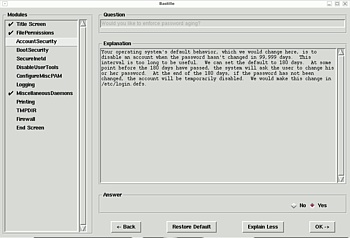

Bastille Linux
Archivierte Anleitung
Dieser Artikel wurde archiviert, da er - oder Teile daraus - nur noch unter einer älteren Ubuntu-Version nutzbar ist. Diese Anleitung wird vom Wiki-Team weder auf Richtigkeit überprüft noch anderweitig gepflegt. Zusätzlich wurde der Artikel für weitere Änderungen gesperrt.
Artikel für fortgeschrittene Anwender
Dieser Artikel erfordert mehr Erfahrung im Umgang mit Linux und ist daher nur für fortgeschrittene Benutzer gedacht.
Zum Verständnis dieses Artikels sind folgende Seiten hilfreich:
Bastille Linux  ist ein Programm, das die Sicherheit eines Systems erhöht und fester Bestandteil vieler Hardened-Projekte wie dem von Gentoo oder Debian ist. Bastille stellt dem Benutzer eine ganze Reihe von Fragen und nimmt anhand der Antwort Veränderungen an Dateirechten, Konfigurationsdateien, u.v.m. vor, um das System abzuhärten. Zu jeder Frage zeigt Bastille eine ausführliche Erklärung, damit man versteht, was für eine und vor allem warum man diese Änderung vornehmen sollte.
ist ein Programm, das die Sicherheit eines Systems erhöht und fester Bestandteil vieler Hardened-Projekte wie dem von Gentoo oder Debian ist. Bastille stellt dem Benutzer eine ganze Reihe von Fragen und nimmt anhand der Antwort Veränderungen an Dateirechten, Konfigurationsdateien, u.v.m. vor, um das System abzuhärten. Zu jeder Frage zeigt Bastille eine ausführliche Erklärung, damit man versteht, was für eine und vor allem warum man diese Änderung vornehmen sollte.
Bastille ist eigentlich auf Server zugeschnitten, man kann es aber auch benutzen, um ein Desktop-System abzusichern. Dabei sollte man allerdings genau die Erklärungen durchlesen und überlegen. ob man diese Änderung tatsächlich haben will. Notfalls, wenn man die Auswirkungen wirklich nicht versteht bzw. absehen kann, sollte man sie lieber nicht vornehmen. Allerdings bietet Bastille jederzeit wieder die Möglichkeit, die Änderungen vollständig rückgängig zu machen.
Außerdem kann Bastille noch das System anhand einer vorgefertigten Konfigurationsdatei (ohne Fragen zu stellen) ändern. Das ist nützlich für Administratoren, die auf einer Vielzahl von Rechnern die gleichen Bastille-Absicherungen vornehmen möchten.
Bastille besitzt sowohl eine ncurses-Textoberfläche für die Benutzung in der Kommandozeile als auch eine grafische Oberfläche für die Benutzung unter einer grafischen Desktop-Umgebung.
Installation¶
Folgendes Paket muss installiert [1] werden:
bastille (universe, nur bis Ubuntu 12.04)
 mit apturl
mit apturl
Paketliste zum Kopieren:
sudo apt-get install bastille
sudo aptitude install bastille
Wenn man die graphische Oberfläche benutzen möchte, muss man außerdem noch das folgende Paket installieren:
perl-tk (universe)
mit apturl
Paketliste zum Kopieren:
sudo apt-get install perl-tk
sudo aptitude install perl-tk
Benutzung¶
Starten¶
 Man startet Bastille mit Root-Rechten [2] entweder mit der Texoberfläche:
sudo bastille -c
oder für die grafische Variante mit:
sudo bastille -x
Beim ersten Start von Bastille wird man dazu aufgefordert, die GPL-Lizenz von Bastille zu akzeptieren. Dazu muss man:
accept
eingeben, wenn man danach gefragt wird.
Änderungen vornehmen¶
Die grafische Benutzung und die Textoberfläche unterscheiden sich nicht. Man bekommt Fragen gestellt und darunter steht dann eine ausführliche Erklärung, was geändert wird und vor allem warum.
Man kann dann meist "No" oder "Yes" angeben, manchmal muss man auch einen Zahlenwert in ein Feld eintragen. Mit einem Klick auf "Ok" geht es zur nächsten Frage, mit "Back" geht es wieder zurück.
"Restore Default" stellt wieder die ursprüngliche Einstellungen ein. Die Änderungen werden erst vollzogen, wenn sämtliche Fragen von Bastille beantwortet sind und man dann bestätigt, dass Bastille die Änderungen tatsächlich vornehmen soll.
Änderungen rückgängig machen¶
Will man alle Änderungen wieder rückgängig machen, benutzt man einfach den Befehl:
sudo RevertBastille
 Übersichtsseite
Übersichtsseite- Erstellt mit Inyoka
-
 2004 – 2017 ubuntuusers.de • Einige Rechte vorbehalten
2004 – 2017 ubuntuusers.de • Einige Rechte vorbehalten
Lizenz • Kontakt • Datenschutz • Impressum • Serverstatus -
Serverhousing gespendet von